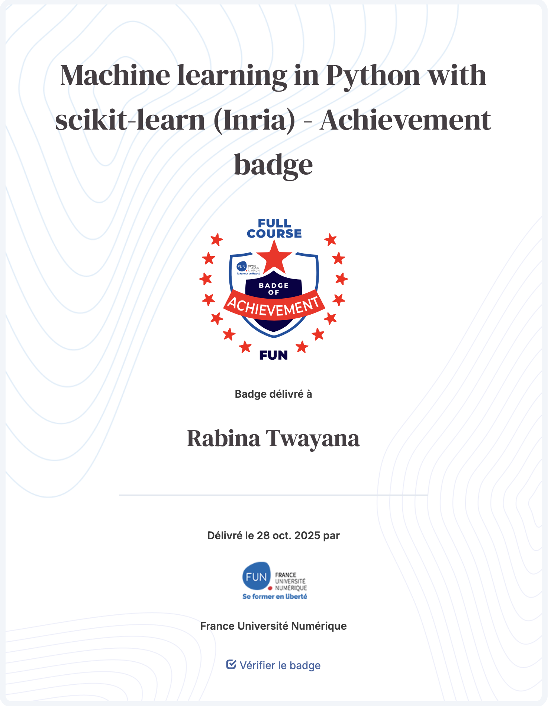
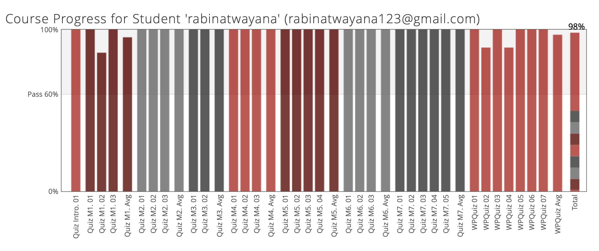

Machine learning in Python with scikit-learn
- MOOC Detail : https://www.fun-mooc.fr/en/courses/machine-learning-python-scikit-learn/
- Certification Link : https://openbadgefactory.com/obv3/credentials/2878bc43c3dc17e91cef0512d265aed4644cd77a
- Completion Date : 28 Oct 2025
Overview
This 36-hour self-paced online course introduced the foundations of predictive modelling with Python using the scikit-learn library. It’s designed to build a practical and critical understanding of machine-learning pipelines, from data preprocessing through model selection, tuning and evaluation.
The course consists of following modules:
- Module 1. The Predictive Modeling Pipeline
- Module 2. Selecting the best model
- Module 3. Hyperparameters tuning
- Module 4. Linear Models
- Module 5. Decision tree models
- Module 6. Ensemble of models
- Module 7. Evaluating model performance
Key Learning Outcomes
The first day offered a well-structured program combining keynote lectures, research oral presentations, poster presentation and city tour (evening). Among the highlights were two keynote addresses that set the tone for the symposium, providing valuable insights into current challenges and future directions in the field of AI for Earth Observation:- Understand core machine-learning concepts — supervised vs unsupervised, bias-variance trade-off, overfitting/underfitting.
- Build a complete predictive-modelling pipeline with scikit-learn: data cleaning, feature engineering, model training, evaluation.
- Apply algorithms such as linear models, decision trees, ensembles and boosting methods, and understand their strengths and limitations.
- Use statistical performance metrics and validation techniques (cross-validation, learning curves, nested CV) for robust evaluation of models.
- Develop a critical mindset: interpret model outcomes, identify failure modes, and make informed methodological choices instead of just following cookbook steps.
Personal Reflection
Attending the AI4EO Symposium 2025 was an enriching and inspiring experience for me. It provided a unique opportunity to gain insights into the latest advancements in state-of-the-art models and techniques. The poster session helps to engage directly with researchers allowing us to understand their approach and problem they are trying to address. The symposium not only deepened my understanding of emerging AI technologies but also offered practical perspectives on how these tools can be leveraged to solve real-world EO challenges. Overall, it was a highly motivating experience that has broadened my knowledge and inspired me to explore new directions in AI-driven Earth Observation research.
